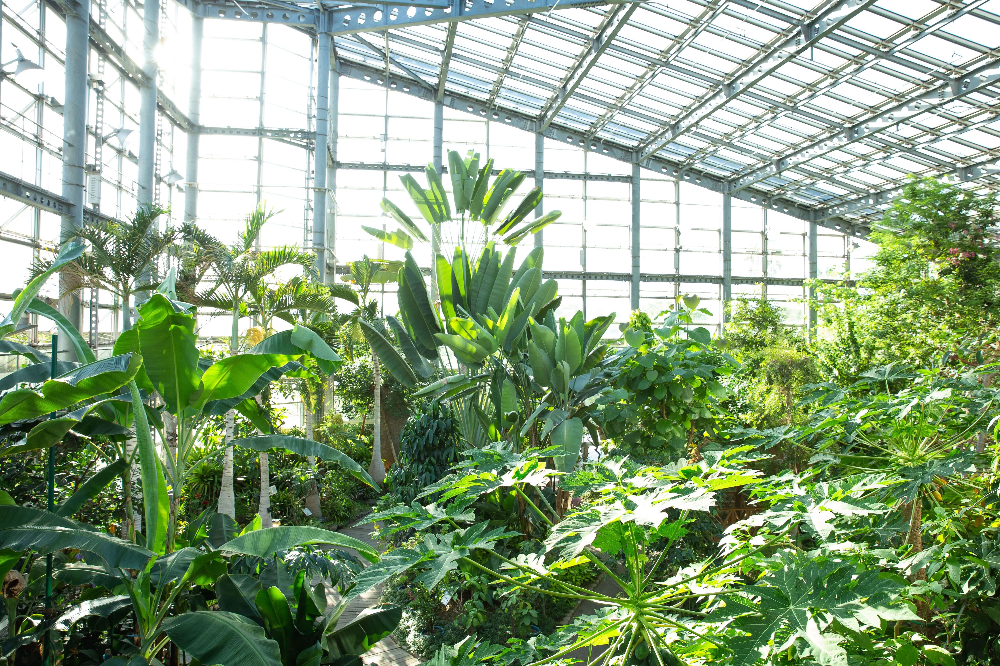

Gothic & Arch Multi-Spans
Interconnected high-gutter bays designed for maximum air volume, motorized roof vents, and smooth condensation drainage over large commercial areas.
Scalable Acreage

Scalable, commercial-grade multi-span structures integrated with automated NFT, DWC, and drip hydroponic systems. Engineered for high-density crop production, maximum water conservation, and year-round climate resilience.
High-Yield Commercial Infrastructure
Engineered for large-scale, automated production. Combine interconnected heavy-duty steel multi-spans with advanced NFT, DWC, and substrate drip systems to optimize resource efficiency and secure year-round crop yields.
Our closed-loop hydroponic networks continuously filter, dosage-control, and sterilize nutrient solutions, while high-gutter multi-span bays stabilize humidity and airflow across multi-acre footprints.
Interconnected high-gutter bays designed for maximum air volume, motorized roof vents, and smooth condensation drainage over large commercial areas.
Nutrient Film Technique channels designed for fast-growing leafy greens, herbs, and strawberries with continuous food-grade recirculating flow.
Coco-coir and rockwool bag benches paired with pressure-compensated drip emitters for vine crops like tomatoes, peppers, and cucumbers.
High-capacity Deep Water Culture raceways featuring oxygenated water beds and floating rafts for uniform, bulk crop propagation.
Ultra-rugged, impact-resistant cladding solutions engineered for long-term harsh desert conditions.
Non-corrosive glass-reinforced polyester panels built to withstand abrasive sandstorms and high salinity environments.
High-performance light diffusion eliminates harsh direct sun scorch, ensuring uniform photosynthetically active radiation (PAR).
Corrugated profiles offer exceptional load-bearing strength against high wind shear and physical impacts.
Protected with an external anti-UV gel-coat layer preventing resin degradation and yellowing over a 15+ year lifespan.
Platform Comparison
Directly compare technical features to determine the right infrastructure for your local environment.
| Key Parameter | Shade Net System | Fiberglass (GRP) System |
|---|---|---|
| Primary Function | Maximum airflow & solar heat reduction | Structural impact protection & light diffusion |
| Optimal Environment | Hot, arid climates requiring rapid heat dissipation | High-wind, sandstorm, or severe coastal zones |
| Material Specification | Knitted UV-stabilized High-Density Polyethylene (HDPE) | Heavy-duty corrugated Glass Reinforced Polyester (GRP) |
| Shade / Light Control | 30% to 80% customizable shade factors | High light diffusion (prevents crop burn) |
| CAPEX Investment | Lower initial cost / High ROI for large acreage | Moderate-to-high initial investment / Long lifespan |
| Actions | View Shade Net Specs → | View Fiberglass Specs → |
Unsure which system fits your site?
We offer hybrid structures combining GRP side walls with retrievable shade net roofs.
From multi-unit hall layout to hydroponic integration — every step handled in-house.
We map your land, crop zones, and expansion goals to design the optimal multi-unit hall configuration — balancing airflow, light exposure, and future scalability.
Install automation, nutrient dosing, irrigation lines, and climate controls inside the glass structure — fully zoned per crop requirement.
Precision cutting, welding, and hot-dip galvanising of structural frames at Al Rawda Factory — engineered for GCC wind loads and long-term corrosion resistance.
Full assembly, sensor calibration, and dry-run testing before handoff — ready for first planting.
Questions
Multi-unit are large, interconnected greenhouse structures that allow for centralized climate control, efficient space utilization, and scalability. They are ideal for commercial farming, enabling uniform conditions across multiple zones while reducing operational costs.
Hydroponic glass greenhouses recirculate water and nutrients directly to plant roots, reducing water consumption by up to 90% compared to soil-based farming. The glass structure provides excellent light transmission and climate control, maximizing growth rates and yields.
Absolutely. Multi-unit can be designed with integrated hydroponic systems, allowing you to grow multiple crop types in separate zones while sharing infrastructure. This hybrid approach combines the scalability of multi-unit with the precision of hydroponics.
Multi-unit are engineered with galvanized steel frames, UV-stabilized covers, and advanced ventilation. They can withstand high winds, sandstorms, and extreme temperatures, ensuring year-round production in harsh environments.
The controlled environment of hydroponic glass greenhouses minimizes exposure to soil-borne pests and diseases. With proper sanitation and integrated pest management, you can maintain healthier crops without heavy pesticide use.